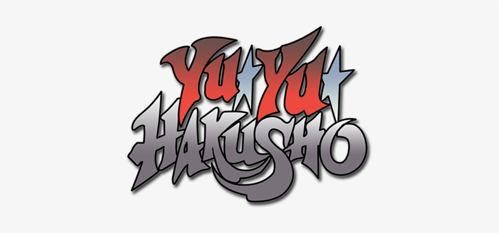

Yu Yu Hakusho, a obra-prima de Yoshihiro Togashi, transcende a simples demografia shonen ao entregar uma narrativa que equilibra perfeitamente a pancadaria visceral com um desenvolvimento de personagens profundamente humano e melancólico. A história de Yusuke Urameshi, um delinquente juvenil de bom coração que morre prematuramente para salvar uma criança, serve como o ponto de partida para uma jornada de autodescoberta e redenção que desafia os clichês do "escolhido". Diferente de outros protagonistas da época, Yusuke não busca ser o mais forte por ego, mas sim para proteger os laços que relutantemente construiu, movendo-se por um mundo espiritual burocrático e muitas vezes moralmente ambíguo que reflete as complexidades da própria vida adulta que ele ainda não viveu completamente.
O coração da série reside na dinâmica inesquecível entre o seu quarteto principal, onde a rivalidade e a amizade se fundem de forma orgânica e carismática. Temos a força bruta e o código de honra inabalável de Kuwabara, a elegância estratégica e o passado sombrio de Kurama, e o niilismo cortante de Hiei, criando um contraste fascinante com a personalidade explosiva de Yusuke. Esse entrosamento atinge o seu ápice no icônico Arco do Torneio das Trevas, frequentemente citado como o melhor torneio da história dos animes, onde os limites físicos e psicológicos dos heróis são testados contra vilões que não são apenas obstáculos, mas espelhos distorcidos de suas próprias naturezas, como o imponente e existencialista Toguro Ototo.
Além das batalhas memoráveis, Yu Yu Hakusho se destaca por sua audácia em subverter expectativas, especialmente em sua reta final com o Arco do Capítulo Negro e o Mundo das Trevas. Togashi utiliza esses arcos para explorar temas mais sombrios e filosóficos, questionando a pureza da humanidade e a verdadeira natureza do "mal", personificada na figura complexa de Shinobu Sensui. A obra encerra deixando um legado de diálogos afiados, uma trilha sonora nostálgica e uma direção de arte que captura a estética urbana dos anos 90 com maestria. É um anime que não apenas define uma geração, mas que continua relevante por entender que, por trás de cada poder espiritual, existe um indivíduo lidando com suas próprias falhas e inseguranças.